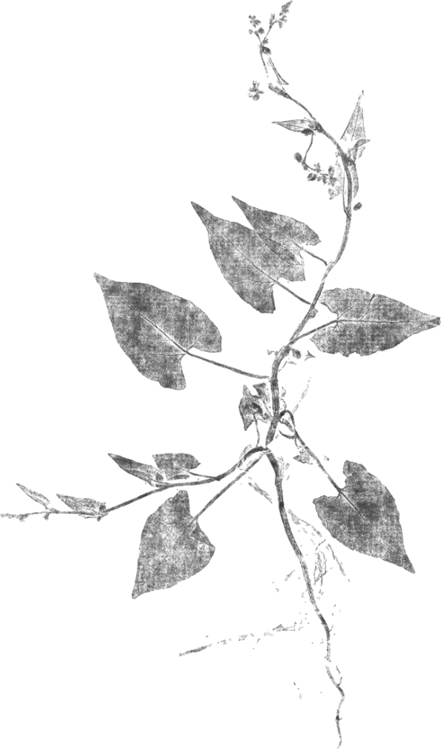
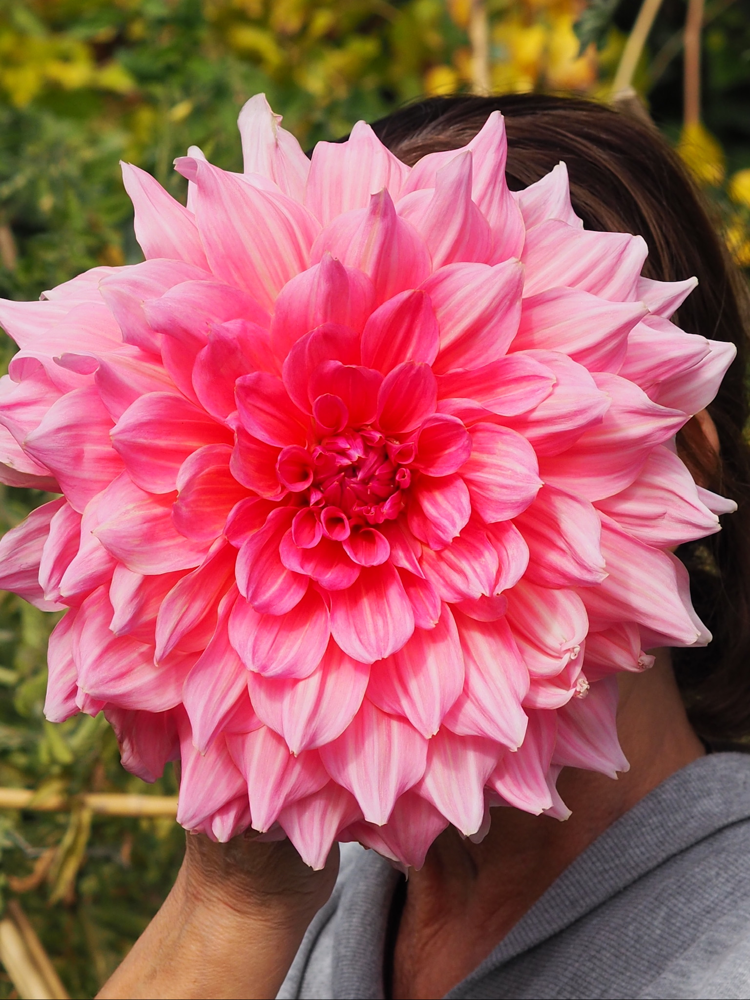
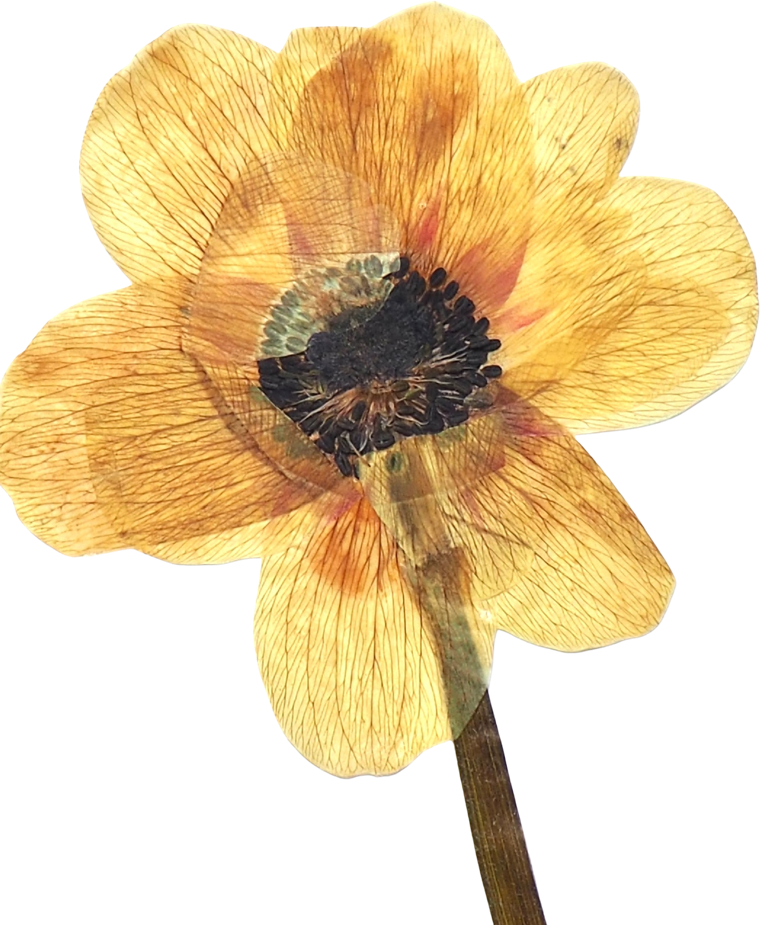
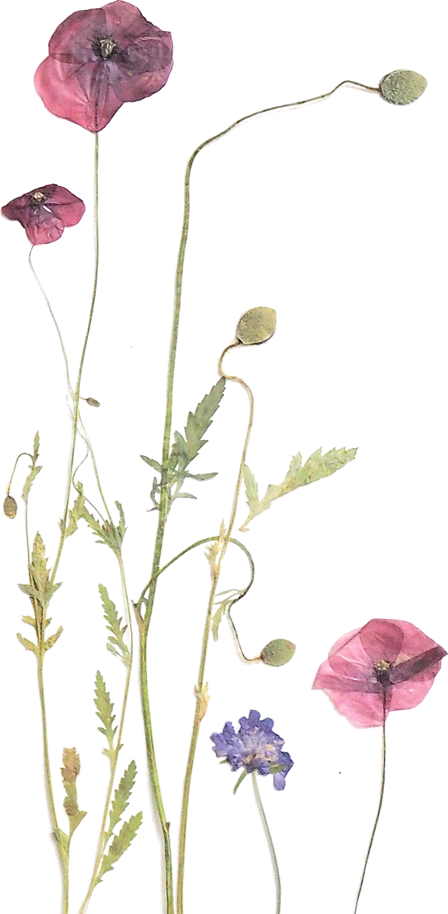

PASO 01 · empiezas aquí
SEMILLA
plantar la primera semilla
Das el primer paso. Te animas a abrirte a un camino nuevo, más honesto y creativo. Entras a la comunidad a través de tu primer taller o del programa de varias sesiones.




❈un jardín compartido
Dejas de crear sola. Un jardín compartido donde florecer a tu ritmo, sin tener que demostrar nada.


El corazón de la comunidad
Una Mujer Jardín es quien intuye que su creatividad no se perdió, solo se quedó en pausa. La que prefiere el ritmo lento a la prisa y lo imperfecto a lo pulido, y que vuelve a la naturaleza y a crear con las manos para reencontrarse consigo misma.
En la comunidad no entras a una membresía: entras a un jardín compartido donde florecer a tu manera, a tu propio ritmo y en compañía de quienes recorren el mismo camino.
Aquí no tienes que demostrar nada. Solo volver a crear.


❦qué cambia cuando
Ideas, recursos y prácticas que compartimos para seguir creando en casa, al ritmo de las estaciones.
Grupo privado y encuentros con quienes recorren el mismo camino y celebran lo imperfecto.
Prioridad en talleres y retiros, descuentos en la tienda y un regalo de bienvenida a casa.


✽así florece el camino
No hay niveles ni cuotas: hay un recorrido. Tres momentos por los que pasa toda Mujer Jardín. Mira el camino y elige por dónde empezar — no hay prisa, solo la que marca tu propia estación.
· recorre el camino de principio a fin ·
PASO 01 · empiezas aquí
plantar la primera semilla
Das el primer paso. Te animas a abrirte a un camino nuevo, más honesto y creativo. Entras a la comunidad a través de tu primer taller o del programa de varias sesiones.

PASO 02 · echas raíces
echar raíces hondas
Empiezas a sentir tu creatividad y a esa nueva mujer que echa raíces. Es el momento de vivir tu primera experiencia: una jornada de un día, el forrajeo o el retiro de tres días.

PASO 03 · floreces
florecer y compartir
Compartes lo que sabes y tus propias obras, y te sumas al mercadillo solidario y a los encuentros. Lo que un día recibiste, ahora lo siembras en otras.
y ya eres parte del jardín
La comunidad es gratuita: se entra creando. Elige tu primer taller o experiencia y empieza a recorrer el camino.


✤lo que cuentan

«El único sitio donde no tengo que justificar mi ritmo.»

«Dejé de crear sola. Ahora tengo mesa y compañía.»


❧dudas frecuentes
Ninguna. La comunidad está pensada para volver a crear desde cero, sin saber dibujar ni llamarte artista.
Hay contenido y grupo online, pero también encuentros presenciales y prioridad en los talleres del taller de Gugui.
La comunidad es gratuita: se entra creando. Tu llave es un taller o una experiencia — a partir de ahí formas parte del jardín, sin cuotas ni permanencia.

✳cartas,
De vez en cuando escribo despacio: lo que florece en la comunidad y los próximos encuentros.